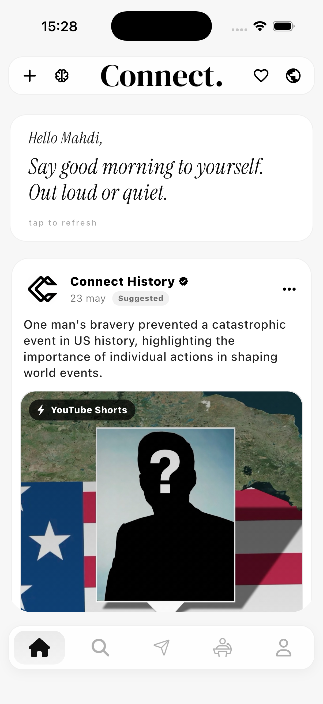
01 · Home
A real-time feed where posts, stories and reactions live together.
A social platform built for real conversation · iOS · July 2026
Scroll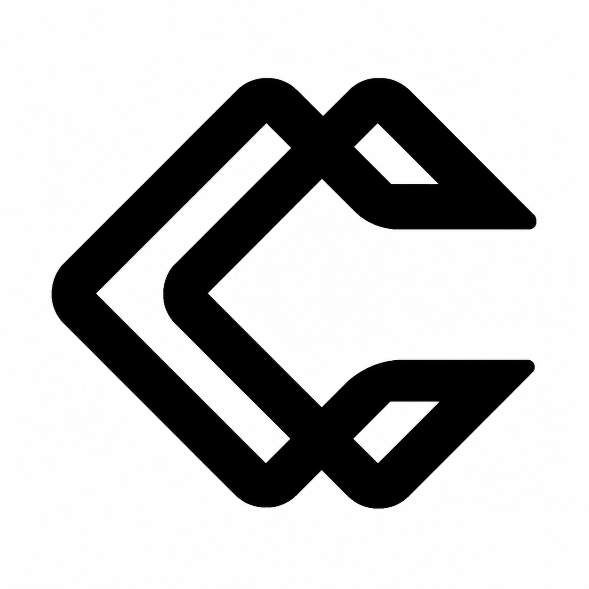
Connect is a modern social platform where people share posts, stories and debates around real content. It puts interaction ahead of consumption. React, discuss, change your mind, instead of just scrolling.
Clean, immersive design throughout. Connect turns social media back into a place for expression, conversation and engagement that means something.

A real-time feed where posts, stories and reactions live together.
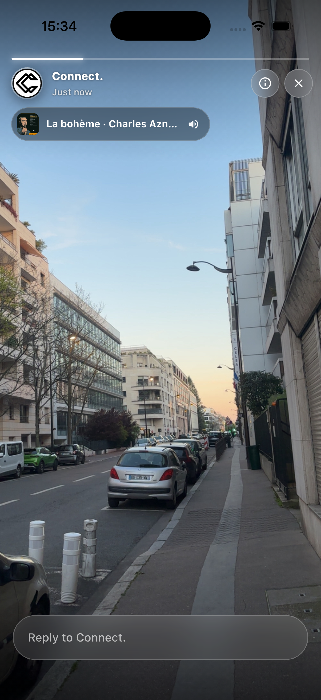
Stories that fade in twenty-four hours. Replies stay tied to the moment they were sent about.
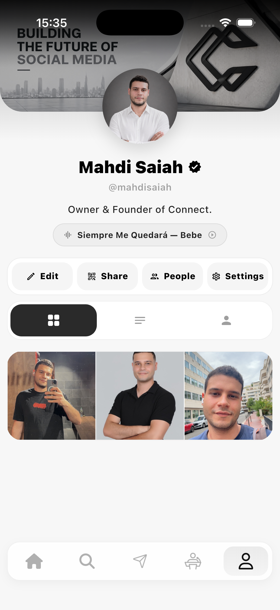
Identity built for expression, not for metrics.
Three to five taxonomy slugs written onto every debate by a small reasoning agent. A sibling-topic graph sends each one to the people who actually care about it.
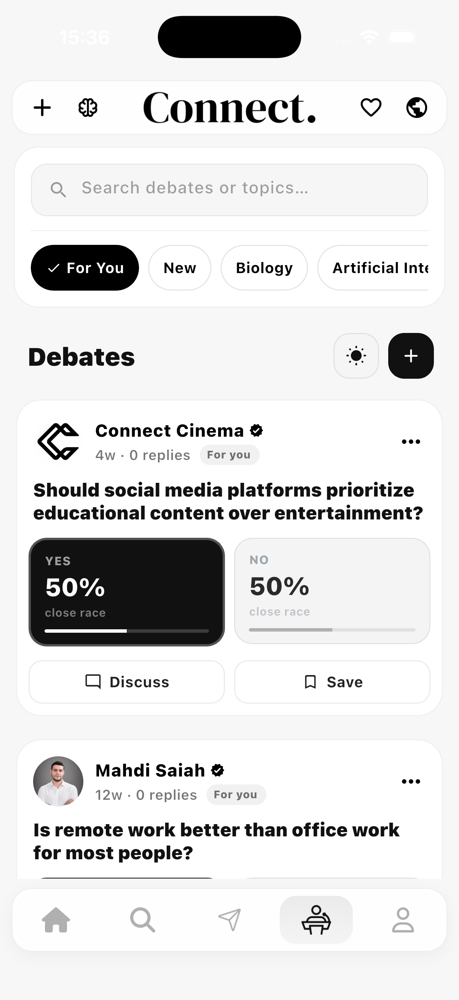
The debate centre. Every open topic in one grid.
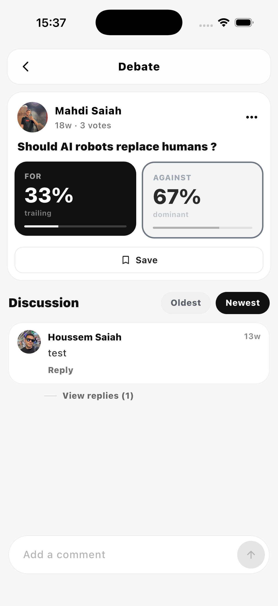
For / Against, voted live. Sides rebalance every hour.
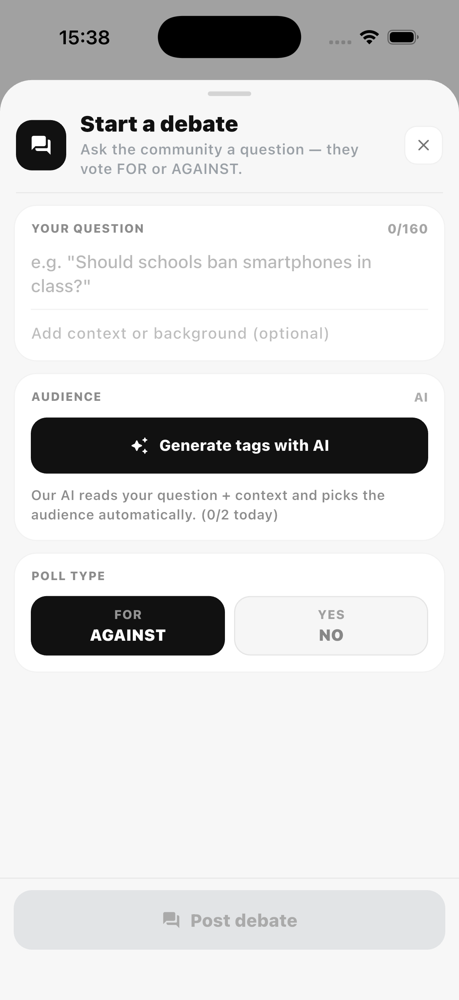
Topic detail, with the debates fanned out from sibling topics.
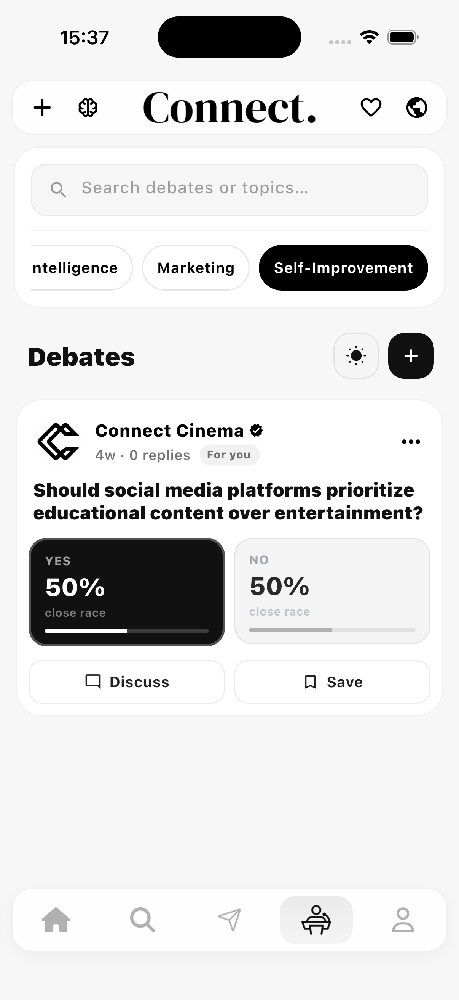
Reactions in the thread. Comments open, capped at 280 characters.
You tell us your interests once, from a shared taxonomy. The feed adapts. Then at the end of every video, a short quiz helps you actually keep what you watched.
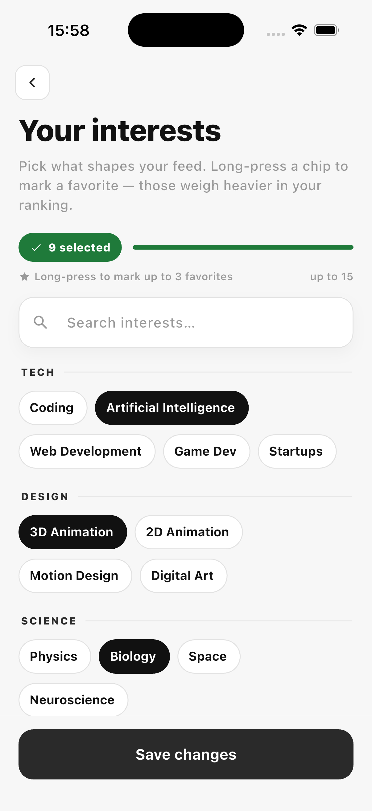
Pick your interests. No hashtags to invent. Just a shared taxonomy that drives the feed and the debate tagger.
The embedded video player. Videos come in from YouTube, Vimeo or direct links.
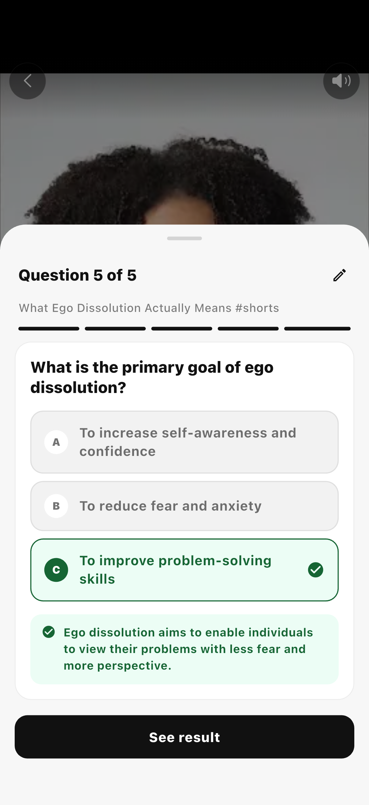
At the end of the video, a quiz built by the AI. Three to five questions, no padding.
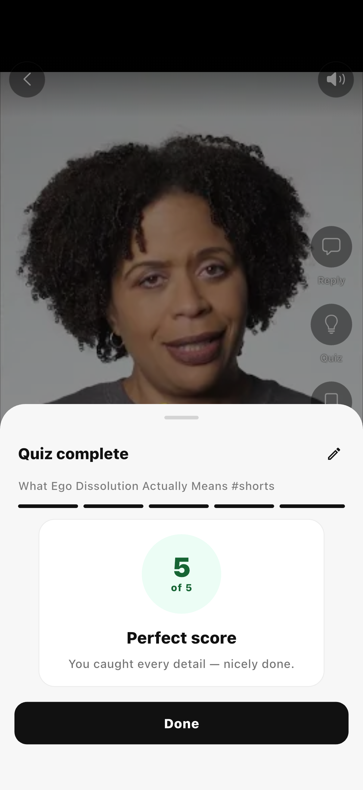
Adaptive answers. The next quiz adjusts difficulty based on how the last one went.
The map shows the people around you with their latest mood signal. One tap and you reply to the mood directly, without going through the profile dance.
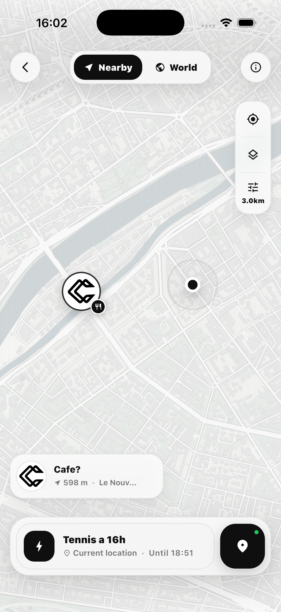
A user shows up on the map. Rough distance, recent mood.
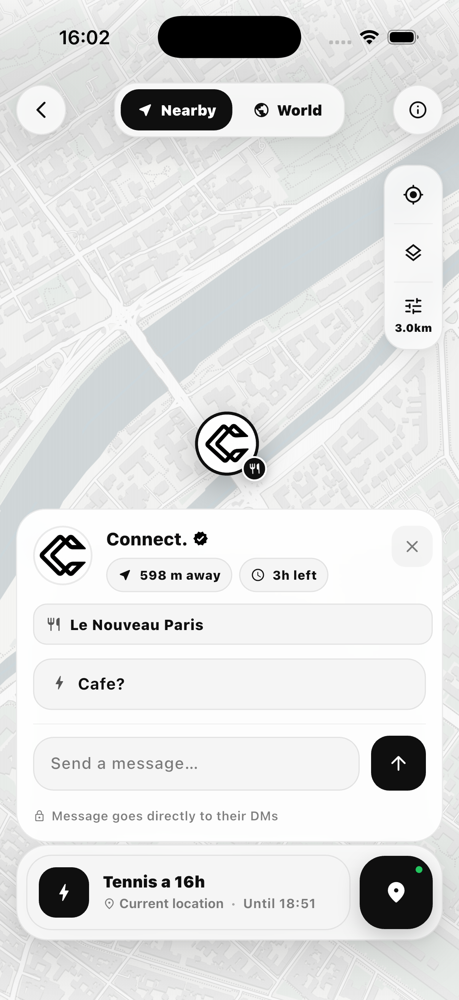
You reply to their mood. No friend request, no blocked DM. Just a line, opened.
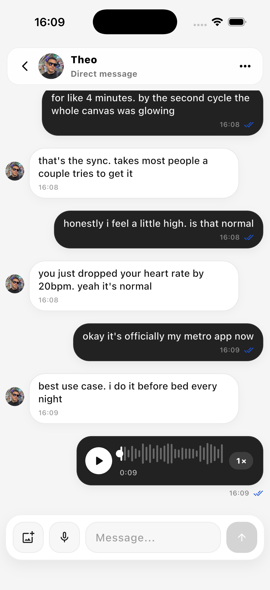
Text, voice messages, and music sharing from your iTunes library. No read receipts unless you both want them. No presence ping unless you turn it on. Media expires by default after a week.
Four games. No accounts, no servers, no scores beyond what's on the screen. They run when the rest of the app can't.
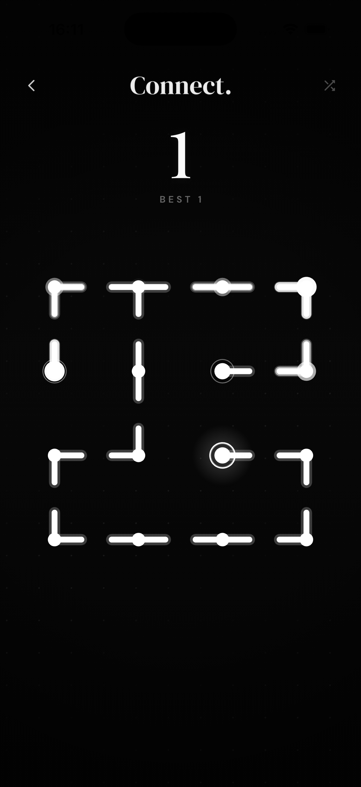
Rotate to mend the network. An endless procedural grid, rooted in the Connect mark.
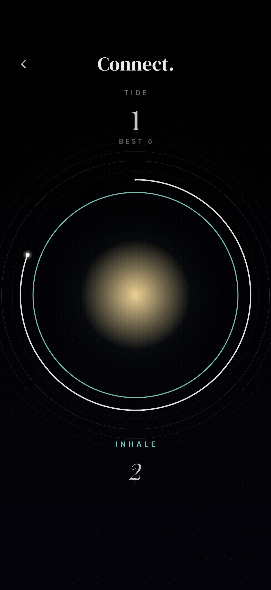
Breathe with a stranger. Clinical-grade resonance pacer at 6 BPM.
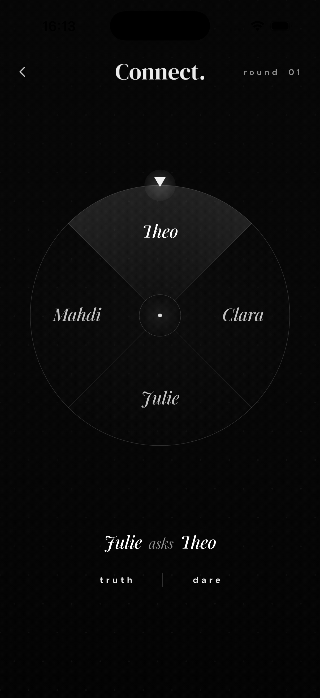
A wheel that ratchets under your thumb. Truth or dare, two to ten around one phone.
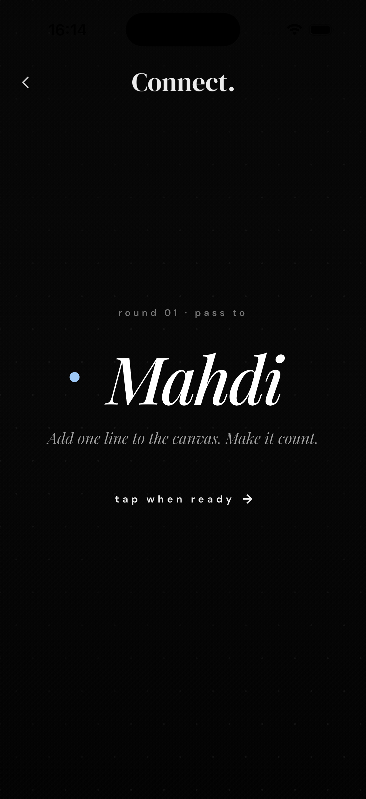
One of you knows nothing. Drawing imposter game for four to ten on one phone.
Six places where the AI runs, in the background. None of them are marketed as features. It's just maintenance, done better.
AI doesn't make the conversations. It cleans the floor between them.
"Debates from last week about urban design where someone changed their mind." The query runs on the same embedding model that ranks the home feed, so what you ask for and what gets surfaced share a vocabulary.
It tags severity (low / mid / urgent), categorises (harassment / spam / impersonation / threat), pre-fills a summary, and routes to the right reviewer. Time-to-action drops from days to under an hour for urgent cases.
Statements that look quoted ("according to the WHO, 75% of...") get cross-referenced against a knowledge base. Posts get a small chip on the side: verified, disputed, or no evidence. The reader decides what to do with it. No auto-removal.
Written by a Groq agent on llama-3.3-70b, from the same set that drives your interests. A sibling-topic graph fans the post out to adjacent rooms. No hashtags, no guessing what to call your topic.
Channel shorts and shared links produce three to five question quizzes. Each question goes through a strict sanitiser to avoid drift onto things the source didn't actually say. The next quiz adjusts to how the last one went.
The matcher weighs complementary moods, not just distance. The result is fewer awkward openers and more conversations that have somewhere to go.
Ads keep the free tier free. Pro turns them off and opens the parts that need a bit more room. Nothing essential lives behind the paywall.
Every core feature. Native, interstitial and house ads support the work.
Net, Tide, Spin, Faker. On-device, identical on both tiers.
Direct messages with voice record and scrub.
Three to five questions, no padding, no streaks.
No native, no interstitial, no app-open ads, no house promos.
Bigger stories and posts. More room for what you're making.
New features land in beta on Pro accounts first.
Optional. Off by default.
Built by Mahdi, in Paris. No team, no pitch deck, no public roadmap. One careful thing at a time. Connect is a Flutter app on iOS and Android, with Supabase as the backend and a small set of Groq agents doing the AI work.
The app ships July 1, 2026. Until then, write if you've got a question, or follow the project on the links below.